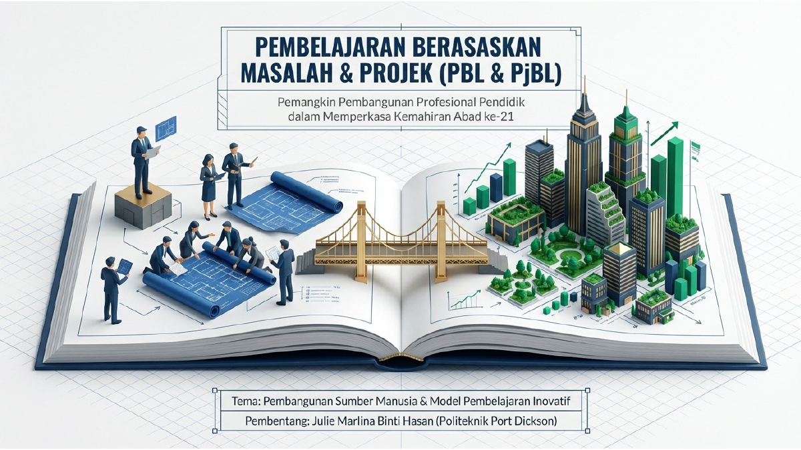

The invitation
The postgraduate programme in Islamic Education Management at Universitas Islam Negeri Sultanah Nahrasiyah Lhokseumawe invited me to speak at its international seminar on Human Resource Development of Teachers; Implementation of Innovative and Effective Learning Models. The session was held online on 15 January 2026.
The programme placed my presentation in the speaker schedule alongside other invited contributors. The certificate of appreciation records my participation as a pemateri.
The ideas I shared

My keynote presentation, Pembelajaran Berasaskan Masalah & Projek (PBL & PjBL), drew on the ISIP project implemented at Politeknik Port Dickson. I shared how the approach moved from an educational problem to student inquiry and project work.
The 22-slide deck includes ISIP project photographs and examples, alongside the PBL/PjBL methodology. It shows the practice I brought to the international exchange, while measured impact should be supported by the original ISIP report.
Across institutions
This invitation gave me a setting to share teaching practice with an international academic audience. It also connects my long standing work in language education and learning design to a wider discussion about innovative learning models.
The invitation, certificate and complete presentation are available below. Under Annex 19, scholarly good-practice sharing is a presentation; a DH13 T6 claim still depends on the ISIP result, programme record and validation.
What I learned
Cross-institution exchange creates space to review one’s own practice.
See the seminar record.
Official documents and the presentation that supported this sharing session.